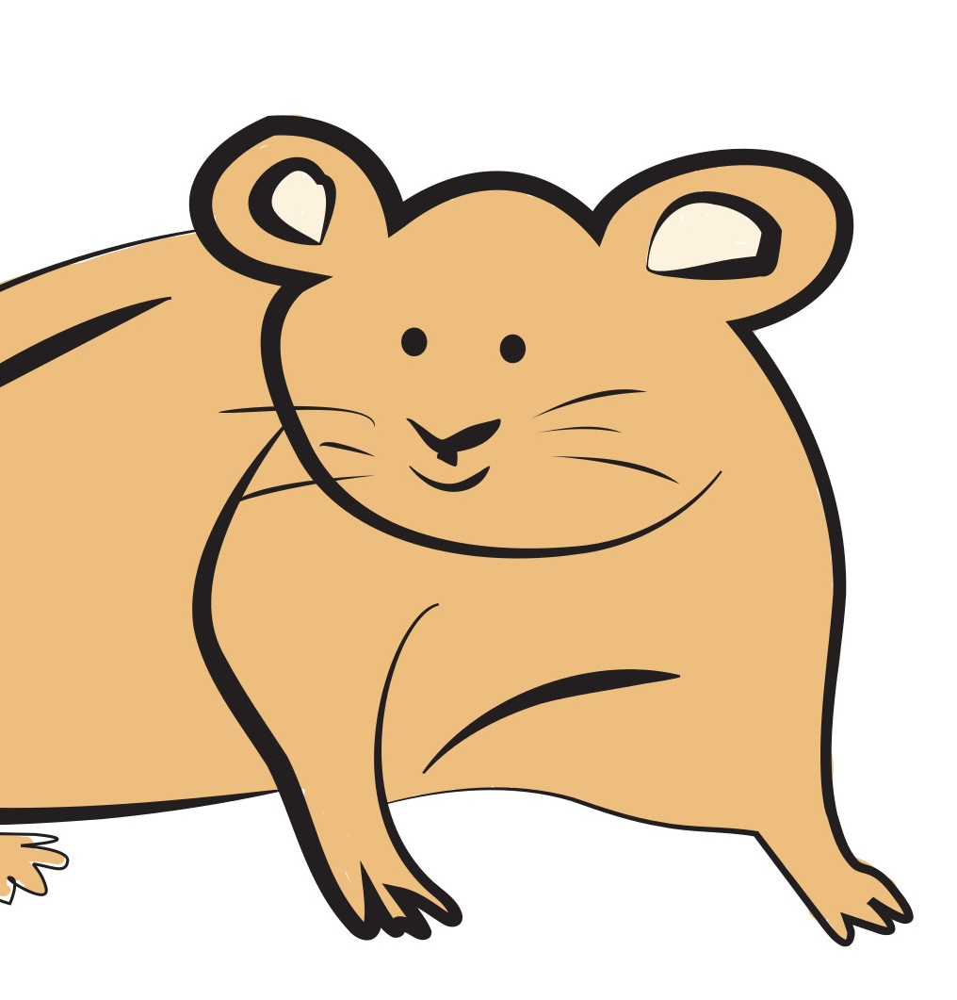
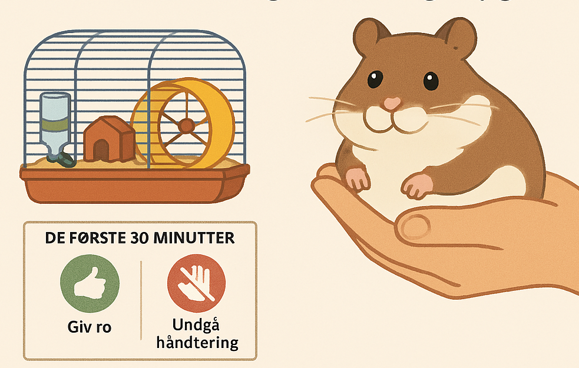

 EFTER FLUGTEN Har du opdaget en hamster mangler? Få 6 gode råd til hvordan du håndterer hamsterflugten bedst Se mere
Født til flugt? Nogle hamsterracer slipper oftere ud end andre Hos plejehjemmets kæledyrshjørne har de efterhånden set ... Født til flugt? Nogle hamsterracer slipper oftere ud end andre Hos plejehjemmets kæledyrshjørne har de efterhånden set det meste. Men noget særligt har vakt opmærksomhed: Nogle hamstere bryder ud igen og igen - mens andre forbliver rolige i buret. Nu spørger forskere og dyrepassere: Er det racen, der afgør det? En ny undersøgelse foretaget i samarbejde med Dyreassistentuddannelsen og Nordisk Kæledyrsinstitut peger på, at visse racer har stærkere flugtinstinkt end andre - og at adfærd kan kobles direkte til type. Hvem vil helst ud? Guldhamstere, kendt for deres størrelse og styrke, topper listen over “mest flugtagtige racer”. Forskerne beskriver dem som “aktive, nysgerrige og med kraft nok til at flytte på låg og låse, hvis de ikke sidder fast”. Dværghamstere, især Roborovski-typen, derimod, er hurtige – men ikke nødvendigvis flugtplanlæggere. De reagerer mere på angst end på strategi. En teori bliver til Det hele begyndte med en række udbrud fra bur 3A og 4B, hvor personalet noterede, at de samme racer gentagne gange slap væk. “Det var som om de kunne lugte svaghederne i buret,” siger dyrepasser Morten. Et samarbejde med forskere blev sat i gang, og man begyndte systematisk at måle tid til udbrud, når racer blev placeret i identiske bure. Instinkt eller miljø? Eksperterne understreger, at miljø også spiller en rolle. Understimulerede hamstere - uanset race - forsøger oftere at slippe væk. Men racens evner gør forskellen: “Nogle racer har bedre redskaber til at gennemføre en flugt.” Hvad betyder det for dig? Hvis du selv passer hamstere, eller nyder at følge med i dyrene på plejehjemmet, så er racens temperament og fysiske egenskaber værd at kende. Vælg rolige racer, hvis buret ikke er 100 % sikkert. Sørg for aktivering og variation - det mindsker flugtbehov. Kend din hamster: Nysgerrige typer kræver ekstra overvågning. Hamstere er små, men komplekse væsner. Med lidt viden om racer og instinkter kan du bedre forstå deres adfærd - og måske undgå det næste store udbrud fra 4B. Luk Læs mere
Flugten fra bur 4B: Hamstere brugte drikkeflaske som vægtstang” “De arbejdede sammen, som om de havde planlagt det.” Læs mere
Velkommen hjem, lille ven: Sådan hjælper du en flugthamster tilbage til ro og tryghed Men hvad gør du, når din hamster endelig vender hjem igen, træt og forvirret? Her får du en enkel og rolig guide til at tage dig af en lille ven, der har været på afveje.  Læs mere